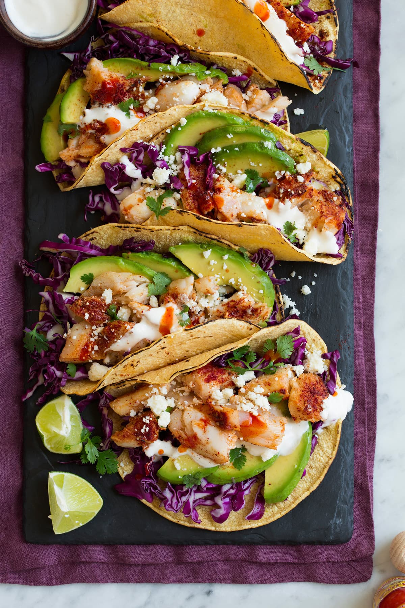

Fish Tacos
Ingrediants
8 Servings
Cabadge Slaw
- Green cabbage, shredded
- Red onion, diced
- Sour cream
- Lime, juiced
- Salt
Tacos
- Tilapia fillets
- Cayenne pepper, ground
- Garlic powder
- Cumin
- Salt
- Pepper
- 16 corn tortillas
Garnish
- Lime, to taste
- cilantro, to taste
Preparation
- In a large bowl, combine green cabbage, red onion, sour cream, lime juice, and salt. Chill until ready to serve.
- In a bowl, mix cayenne, garlic powder, cumin, salt, and pepper. Season each tilapia fillet on both sides with the seasoning mix.
- Over medium-high heat, cook 2 fillets at a time for 8 minutes, flipping halfway. Repeat for the remaining fillets.
- Using a fork, break apart the fillets into bite-size pieces.
- Right before serving, heat the corn tortillas in the pan over high heat. Remove from the pan and assemble the tacos with the cabbage slaw and tilapia.
- Garnish with cilantro and lime juice.
- Enjoy!